FourSight：以轨迹过滤和稀疏通道补偿稳定FP4强化学习
FourSight 研究大模型如何在 NVFP4 权重和激活量化下稳定进行强化学习后训练。一作 Yining Wei 来自香港科技大学，Tianyuan Wu、Gu Gong 为共同一作，合作机构包括香港科技大学（广州）和阿里巴巴。论文于2026年11月3日UTC首次提交，本笔记核验于11月5日北京时间。论文入口：arXiv:2611.04887。本轮未核验到独立公开代码链接，未重跑作者训练，以下解释来自原文及实验表。
四位量化既会损坏生成轨迹，也会放大训练与推理引擎间的概率差异；少数异常轨迹和高方差激活通道便可能引发训练崩溃。已有修复往往牺牲吞吐，本文希望利用故障的集中性，同时保住低精度执行效率和稳定学习。
1. 背景和问题
强化学习后训练把生成和更新分开：推理引擎为同一问题生成一组回答，训练引擎根据奖励形成优势，再对词元计算梯度。两个引擎分别优化批处理、缓存和矩阵乘，即使读取同一权重，也可能给出不同概率。高精度下这种偏差通常较小，权重与激活都降为四位后，分块缩放和舍入会把差异放大，名义上的在策略样本在数值上就可能明显偏离训练侧的策略。
NVFP4 在全局尺度之外，把归约维度划分为十六元素小块，每块共享低精度尺度。这适合硬件执行，却会让一个过大的激活抬高整块尺度，损伤同块其余十五个数的分辨率。因此，小幅权重更新也可能明显改变量化后的行为。本文先区分参数本身是否受损、还是量化执行没有表达出已有能力，再决定在哪个环节干预。这个诊断顺序比统一增加所有位置的精度更具体。
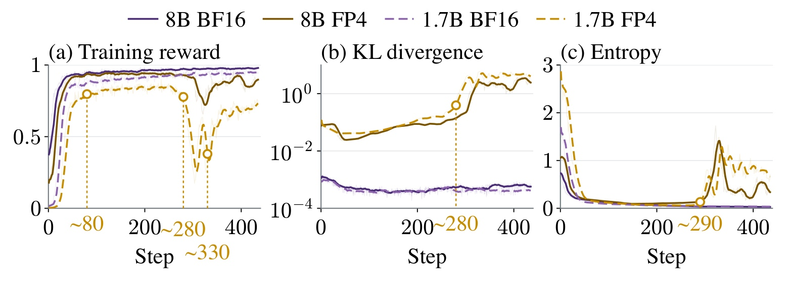
Figure 1 从宏观上展示故障经过。左图横轴是训练步数，纵轴为平均奖励，两种规模模型早期都能学习，但四位路径中途下跌，之后只部分恢复；中图是采样估计的训练推理散度，右图是生成熵。图中约八十步、二百八十步与三百三十步标出早期平台、崩溃和反弹，它们是这个实验的阶段位置，不是普适阈值。四位路径早期已经比高精度路径差，而散度和熵的剧烈异常在崩溃附近才明显扩大，说明这些平均指标可能滞后。作者已启用默认截断重要性采样，故不能把失败解释为没有做任何数值偏差修正。这个图尚未证明故障原因，只建立后续微观诊断需要解释的现象：早期生成质量受损、中期策略突然退化、后期表面恢复仍不充分。训练观测应覆盖这条时间线，而不是只截最终奖励较高的一步。
作者同时展示十七亿与八十亿模型，表明问题不是只在一个参数规模出现；但这些曲线都来自数学训练，不能作为所有模型都会同一步数崩溃的证据。
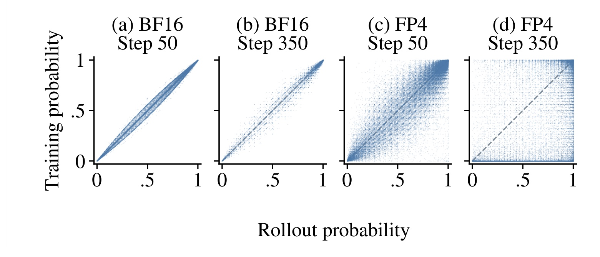
Figure 2 把真实采样词元在两个引擎里的概率放到二维坐标，横轴来自生成侧，纵轴来自训练侧，虚线代表一致关系。高精度前后期的点贴近对角线；四位早期已更宽，后期出现大量贴近训练概率为零的点。它们不是从未发生的词元，而是推理侧确实采样、训练侧却几乎不相信的事件。这里的尾部相对于训练概率定义，不能理解成词表低频词，更不能把算法变成删除生僻词的规则。图中现象支持用极小训练概率识别严重失配，但没有证明一个固定阈值适用于所有温度、模型和任务。若正常但困难的思考步骤也落在低概率区，过滤就可能误伤有效探索。作者随后结合整条轨迹内的总数与连续段，而不是遇到一个低概率词元就删除整条回答，这正是从散点现象走向可用训练规则所需的谨慎。
横轴和纵轴始终针对同一个前缀与同一个词元，否则散点偏离可能只是输入不同造成。对引擎诊断来说，控制这个条件比比较两个独立生成回答的平均概率更重要。
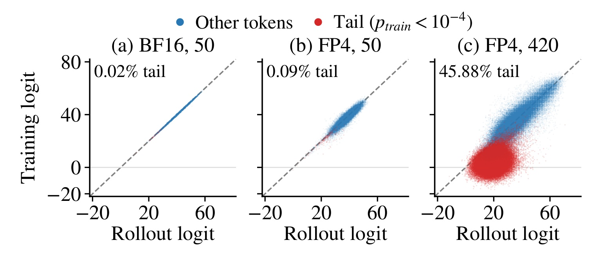
Figure 3 去掉 softmax 的压缩效应，比较两个引擎的原始打分。早期尾部比例很小，四位后期却出现独立红色点团：生成侧给出不低分值，训练侧接近零，与普通词元的对角线带明显分离。图上后期尾部比例达到百分之四十五以上，说明故障并非每个正常词元均匀多一点噪声。这对修复粒度有直接影响：统一收紧所有词元更新既损伤正常信号，也未必隔离真正异常。原始 logit 的绝对零点受实现和归一化影响，不能把这里的近零现象照搬成所有引擎的固定零阈值。本文实际门控依据训练概率和轨迹分布，图中 logit 只是解释异常可分离性的诊断工具。它也没有验证每个红点对应语义错误，所以后续效果仍需要任务准确率检验，不能以数值看起来更整齐代替最终学习质量。
红色标记由训练概率阈值产生，颜色不是根据原始分值人工挑选，这使概率图与打分图能够对照验证。离群团的出现说明异常筛查应关注尾部而非只看均值。
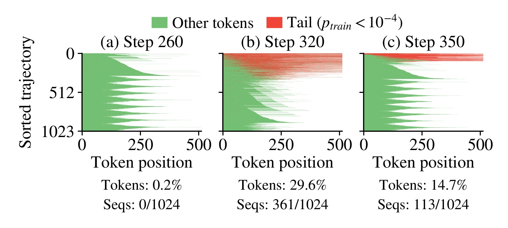
Figure 4 每行是一条回答，纵轴按尾部比例排序，横轴为词元位置，红色代表严重失配，绿色代表普通词元。崩溃前一批只有约百分之零点二红点；崩溃时三百六十一条回答受到明显污染；部分反弹后仍有一百一十三条几乎全红，总组大小为一千零二十四。因而平均指标恢复不代表所有轨迹恢复。词元占比与序列占比有不同分母，不能把后期百分之十四点七的红色词元解读成同样比例的失败回答。在组相对强化学习中，同一回答所有位置共享一个优势，坏回答里外观正常的词元也可能携带错误信用，因此只屏蔽红点梯度仍会泄漏坏信号。整条轨迹关闭优势恰好对应这种结构。不过排序后的二维图是诊断展示，实际训练不需要排序；算法只计算每条序列的异常统计，避免把可视化步骤误当成额外训练成本。
在反弹后的批次中，大约百分之八十九轨迹已经恢复，其余部分仍高度异常。这个集中结构使整条轨迹筛查有机会保留大多数正常回答，而非一刀切丢掉整批。
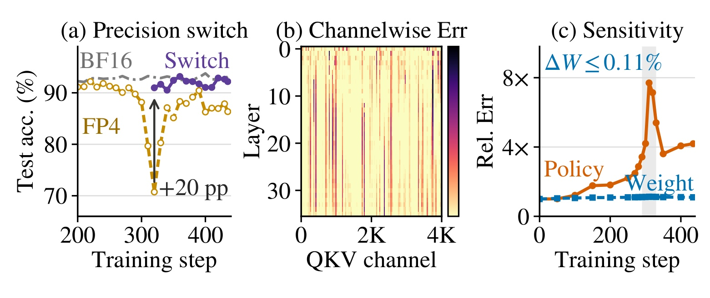
Figure 5 左图固定退化检查点，只将生成精度切回高精度，测试准确率立即恢复约二十个百分点，说明参数仍保留不少能力；中图按层和通道排列量化误差，亮色集中在少数输入通道；右图对比权重相对变化与策略量化误差，前者最大很小而后者明显上升。它支持把修复资源集中到高方差通道，而不是把全部矩阵乘都恢复高精度。必须限定的是，单个检查点的恢复量不等于完整方法最终训练增益，也不证明其他训练设置永远不会损坏权重。更可靠的含义是，该实验中生成过程的量化敏感性成为主要瓶颈，单纯过滤坏回答无法补回原本没有生成出来的有效推理。补偿在采样前改善样本质量，过滤在更新前防止残余异常污染梯度，两种干预针对不同环节。正因如此，本文将算法与内核协同设计，而没有只提出一个损失函数修正。
权重最大相对变化不超过百分之零点一一，策略量化误差却接近八倍变化；两者使用不同量纲，图中对比强调敏感性，不是在定义两种误差之间固定的比例定律。
2. 方法
2.1 TIM-aware Sequence Filtering：隔离整条异常轨迹
FourSight 不要求生成与训练引擎合并成同一实现，而是在梯度更新之前判断回答是否严重偏离。训练侧对生成侧实际采样出的词元重新计算概率，定义尾部事件：
符号解释：$i$ 是组内回答编号，$t$ 是位置，$x$ 是问题，$y_{i,<t}$ 是已经生成的前缀，$\theta_{\mathrm{old}}$ 是生成数据时权重，$\tau$ 为小概率阈值。该指标检测两个数值路径对已经发生事件的分歧，不直接判断答案正误。因为每个位置都确实由生成侧采样，训练侧认为几乎不可能的事件可作为严重失配线索；少数孤立低概率事件仍可被容忍。
接着计算两个统计：总尾部词元数以及最长连续尾部段。原文以文字定义两道门，展开为数学记号可写为：
符号解释：$G_1$ 捕获遍布整条回答的漂移，$G_2$ 捕获局部前缀失控后的连续崩坏，没有异常时最长段记零。这里仅把原文定义明确表达，不引入新方法。相同的异常总数可能对应完全不同生成状态：分散在长回答中的几个异常与连续异常段，对后续条件分布的影响不同，因此两个计数有互补意义。
符号解释：$K_1$、$K_2$ 是总量和连续长度阈值，$f_i$ 决定回答是否参与更新，$r_i$ 为奖励，$\mu$ 与 $\sigma$ 为原始采样组奖励均值与标准差。实现直接将整条坏轨迹的优势置零，不重新组合词元、不修改答案奖励。默认概率阈值万分之一，总量阈值与输出长度的百分之一相关，连续阈值为五。迁移到更长回答时应同时核验长度归一化与过滤比例。
符号解释：$G$ 为过滤前组大小，$|y_i|$ 是回答长度，$\rho_{i,t}$ 为策略目标里的重要性比，$\epsilon$ 为截断幅度。分母保留原始组大小：若改为幸存回答数量，删除样本就会隐含放大剩余梯度，等同于改变有效学习率。保留分母让异常组贡献自然降低，但它也意味着困难问题若经常全组被过滤，学习速度可能下降。作者并未通过这个定义消除样本选择偏差，后面仍需同时观察保留率和最终能力。
2.2 Sparse Precision Compensation：保护高方差输入通道
过滤只能防止坏样本更新，不能恢复低精度生成时已经丢失的推理能力。第二个组件在每个投影的输入通道中挑出少量高方差位置，以高精度保留它们，其余位置继续使用 NVFP4。原文混合精度分解为：
符号解释：$X$ 为激活，$W$ 为权重，$S$ 为受保护通道集合，$\bar S$ 是剩余通道，帽号表示量化结果，$\alpha$ 为全局尺度。受保护激活维持原始高精度，对应权重按相同尺度组织，避免相加时出现尺度不一致。保护发生在归约维度，不是把若干完整输出神经元整体恢复高精度。对于四千零九十六维输入，六十四通道约占百分之一点五六，但额外状态、搬运和时间不能简单按此比例估算。
作者通过重构误差上界解释选择依据：
符号解释：$y$ 是原始高精度结果，$\hat y_S$ 是补偿结果，$\|W\|_F$ 是权重范数，$m_j$ 是通道二阶矩，$\sigma_j^2$ 为方差，$C$ 汇集分块和尺度舍入常数。二阶矩近似方差需要均值较小，不能把它写成对任意分布无条件成立的最优选择定理。机制直觉是保护最容易撑大块尺度的位置，减轻异常值对同块其他数值的连带损伤。冻结检查点对照再比较随机、误差和方差选择，验证定位通道比随便提高一点精度更有效。
2.3 SpliceGEMM：按预填充与解码负载融合补偿
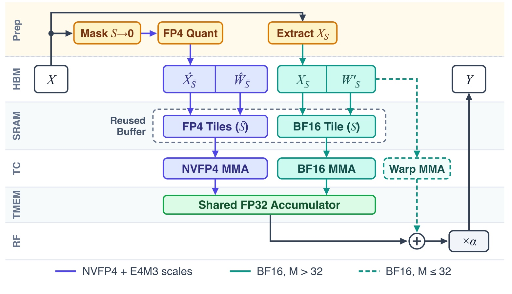
Figure 6 展示数学分解如何成为高效算子。最上方一次读取输入，同时将保护位置从四位主路清零、量化其余位置，并抽取高精度旁路；权重也预先分成四位包和小的高精度包。中间大批量路径复用共享内存缓冲区，主路与补偿通过 Tensor Core 累加到同一个单精度结果，小批量路径则让旁路绕过昂贵的共享内存准备，使用寄存器和 warp 运算后合并。底部图例明确区分两条高精度路径，它们按活跃词元数选择，并非每次都执行两套补偿。图中所有结果最后统一缩放写回，避免独立矩阵乘加全局内存合并的额外开销。其工程价值是，稀疏高精度在数学上计算少，并不保证实现上便宜，内核启动、访存、同步和图捕获都可能吞掉收益。融合设计减少这些成本，但也要求精确维护形状分派、缓冲区生命周期和权重同步，不能当作修改一个量化开关即可复现的功能。
活跃词元超过三十二时走高吞吐路径，小于等于三十二时走低延迟解码路径。前者复用 SRAM 存放补偿块，后者尽量绕开小矩阵搬运和屏障。性能评测必须包括激活量化、旁路提取和缩放，不能只比较裸矩阵乘峰值。每次优化器更新后重新打包权重，下一轮采样中保护集合保持一致，减少两个引擎自行重量化引入的额外分歧。
系统基于 veRL，rollout 使用 vLLM，训练使用 Megatron-LM 或 FSDP。前向钩子均匀抽取部分词元行积累通道矩，用上一轮统计重选通道，论文报告每次更新约零点三八秒额外时间。权重包通过通信与进程间机制同步给生成侧，反向仍用高精度和直通估计。因而“四位强化学习”不意味着优化器、梯度和全部缓存均只有四位。补偿改善前向样本，过滤控制进入反向的信用，两者在训练迭代的不同时间点协作。
3. 实验结果
3.1 跨引擎训练与最终四位部署
主实验使用四节点、每节点八张支持 NVFP4 的 GPU。八十亿模型在数学数据上用 DAPO，十七亿模型用 GRPO 验证方法迁移；性能测量另覆盖三百二十亿与一千二百亿总参数的混合专家模型。不同尺度使用不同 GPU 数，不能将跨尺度时间相除推出扩展效率。软件版本、输出上限、采样温度和阈值都是比较条件的一部分，而非不影响结论的实现细节。
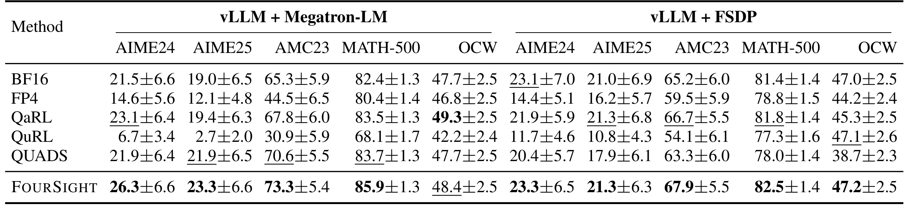
Table 1 左右两组分别为 Megatron-LM 与 FSDP 训练，列是五个数学基准，数值为平均准确率和标准误。最容易误读的是，标为 BF16 的行指高精度训练来源，最终也转到四位推理；FourSight 与 QUADS 则保留自己的补偿。Megatron 下 AIME24 从最强基线 QaRL 的百分之二十三点一升至二十六点三，提高三点二个百分点，AMC23 从 QUADS 的七十点六升至七十三点三。但是 OCW 上 QaRL 四十九点三高于完整方法四十八点四，不能写成全部基准领先。FSDP 组整体最好或并列，也要结合误差项理解小数据集上的波动。表格证明面向四位部署的适配价值，不证明完整方法超越高精度训练加高精度推理的能力上限。补偿在推理时仍存在，所以精度优势必须与对应的内存和执行成本配对，不能一边引用补偿模型质量，一边套用无补偿纯四位成本。
例如 OCW 的负向意味着整体最优描述必须附带任务范围；而均值旁边的标准误也提醒我们，小规模数学评测上的细小排序可能不稳定，需要更充分重复验证。
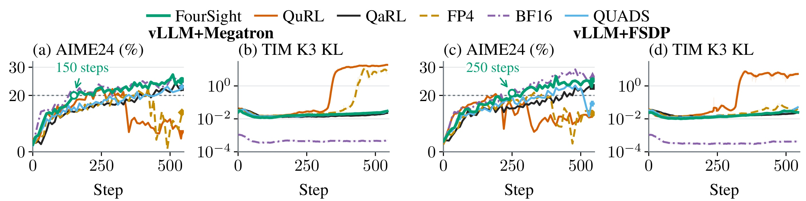
Figure 7 与上一张表的口径不同：高精度曲线按高精度推理验证，量化方法按对应量化路径验证。左侧两面板显示 Megatron 下准确率及失配，右侧是 FSDP，部分基线先学习再退化，而完整方法较平稳。作者用第一次达到 AIME24 百分之二十准确率的步数衡量学习效率，两个引擎分别一百五十步与二百五十步，相对 QaRL 为二点六和一点七六倍步数效率。这不是每一步快这么多，也不是实测总墙钟加速。评测频率、曲线波动和阈值选取都影响首次跨线时刻，最终目标若更高，方法排序也可能变化。图的可靠结论是稳定学习及该阈值下的效率，实际费用还需乘上对应步长并纳入失败重试。两个引擎失配形态不同，也说明平均散度低不自动代表轨迹质量高；诊断应同时包含回答内容和最终任务成功率。
与 QUADS 的阈值步数相比，作者报告 Megatron 约二点三三倍、FSDP 约一点五二倍；这与针对 QaRL 的一点七六至二点六倍使用不同分母，不能混在同一提升陈述中。
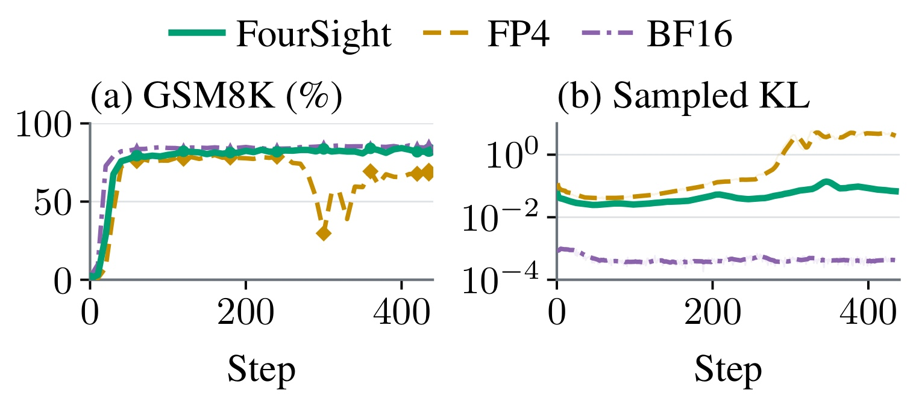
Figure 8 改变模型规模和训练配方，左图为数学验证准确率，右图为采样散度。纯四位路径在中期明显退化，随后恢复也未完全追上；FourSight 大体接近高精度轨迹，散度维持在相对低水平。这说明方法并非只对一种八十亿模型和 DAPO 配方成立，但还不能外推到长上下文、多轮工具调用或偏好奖励。图中的差距发生在同一组任务和配置里，不能拿另一数据集上的散度绝对值直接比较。高精度曲线仍更接近数值一致，完整方法没有宣称把全部误差归零，而是控制其对学习的伤害。若目标服务允许一直用高精度，是否值得引入这套内核与统计维护，仍要重新核算训练费用和推理预算。这里的小模型动态验证与下一张最终部署表互补，前者检验过程可靠性，后者检验能力是否能在目标低精度中表达。
小模型训练使用较短输出上限，最终部署评测又采用另一响应上限，过程曲线与末表不是完全相同测量协议。解释泛化时必须保留这一差别。
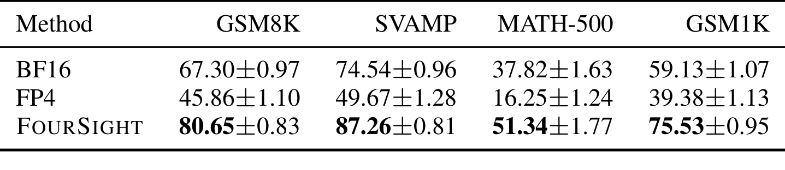
Table 2 把最终部署结果展开到四个数学数据集。FourSight 的 GSM8K 为百分之八十点六五，高精度训练后转四位为六十七点三，纯四位训练为四十五点八六，其他三个基准也有较明显改善。作者概括相对高精度训练后量化的优势为十二点七至十六点四个百分点，应按绝对百分点理解，不能改成相对百分比。它与问题设置吻合：高精度训练可能依赖低精度难以稳定表达的内部激活，事后量化会丢失；量化感知训练加稀疏补偿则适配目标精度。但是表中的模型并非完全相同服务配置，完整方法继续保留通道补偿，因此成本比较必须使用同一部署路径。标准误反映作者采样评测的不确定性，不等于多次独立训练种子的方差。小模型上大幅回收量化损失，也不代表更大模型有同样百分比收益，尤其当更大模型的原生四位退化较轻时，提升空间本来就不同。
3.2 单步性能与内核峰值的不同范围
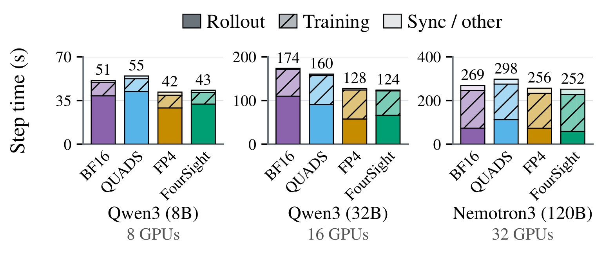
Figure 9 固定相同提示和回答长度分布，比较预热后的单步时长，并拆成生成、训练和同步部分。八十亿模型完整方法约四十三秒，高精度五十一秒，纯四位四十二秒，说明补偿只增加小幅时间；三百二十亿完整方法约一百二十四秒，比纯四位一百二十八秒还略快；一千二百亿为二百五十二秒，高精度二百六十九秒。八十亿与三百二十亿相对高精度约一点一八和一点四倍，这是完整迭代范围内的数字，应与算子峰值区分。大模型训练部分占比更高，生成加速对总时间作用被稀释，因此总参数更多并不必然获得更大加速。这张图验证性能能扩展到一千二百亿工作负载，没有给出该尺度完整准确率与长训练稳定性。匹配长度排除了回答变短导致的显然混淆，但实际训练中的长度变化、过滤率与同步拥塞仍会影响长期费用，不能直接拿静态平均步长替代生产测量。
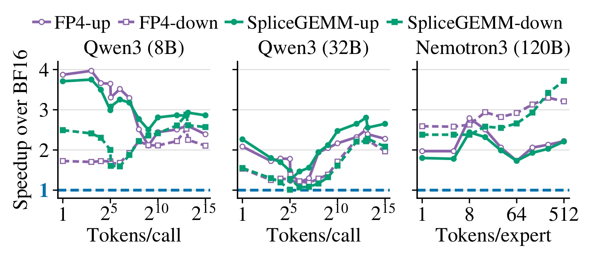
Figure 10 以高精度投影为一倍基线，横轴变化为每次调用词元数，混合专家模型则为每专家词元数，纵轴是加速。测量包含激活量化等完整投影，比较纯四位和融合补偿。八十亿、三百二十亿投影最高约三点七和二点八倍，部分大模型下投影也能达到三点七倍，说明融合没有完全吃掉低精度收益。曲线在中间形状出现低谷和起伏，所以最高点不能代表真实批次平均。小批量更受启动与访存制约，大批量更受计算吞吐制约，双执行路径恰好对应这种差异。完整训练还有注意力、采样、奖励、反向和通信，按占比聚合后总收益自然低于峰值。若迁移到生成式推荐，要先统计真实序列长度和专家负载，再做加权测量；不能用最大投影倍数直接估算线上请求速度。内核比较与迭代比较在同一论文中都成立，但回答的是两种层级的性能问题。
图中的实线与虚线区分前馈上投影、下投影，二者矩阵形状和带宽压力不同。不能把某一条最快曲线替换为模型中所有线性层的统一速度。
3.3 组件互补与过滤预算
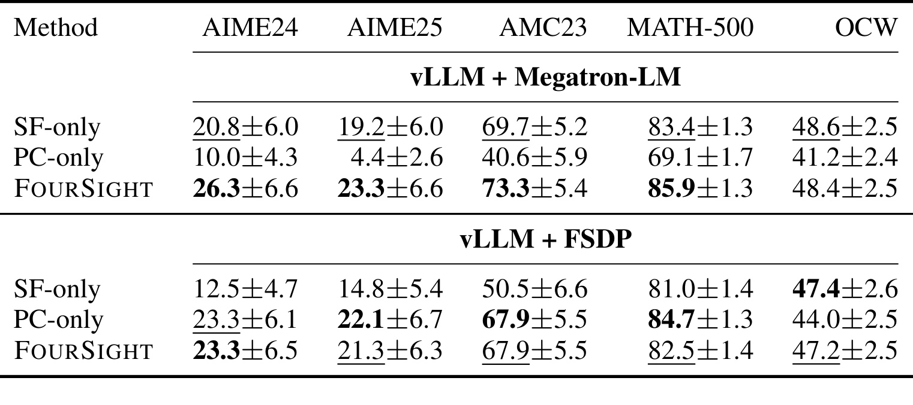
Table 3 给出只过滤、只补偿和完整组合的最终四位准确率。Megatron 下只补偿 AIME24 为百分之十，只过滤为二十点八，完整方法二十六点三，支持补偿改善生成而过滤阻断坏轨迹的互补解释。然而 FSDP 下排序并不整齐：只补偿的 AIME25 二十二点一高于完整方法二十一点三，MATH-500 八十四点七高于八十二点五；只过滤的 OCW 四十七点四也略高于完整组合四十七点二。因此，组合对所有基准都必要且最优超出了表格证据。稳妥结论是，不同引擎有不同误差结构，默认组合可同时防范两类失败，但任务质量和过滤强度存在权衡。标准误较大时，零点几差距不能直接写成确定胜负。实现者应保留两个组件开关，以同样预算检查它们的作用，而不是以论文总体结论替代本地诊断。这也让负向消融有实际价值：它告诉我们过滤不是无代价清洁，删样本可能压掉本来还能学习的轨迹。
由此看，组合的优势应表述为跨故障模式的防护，而不是绝对支配每项分数。对需要特定数学基准的部署，单独补偿仍是值得保留的受控候选。
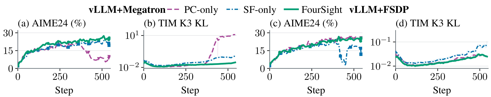
Figure 11 为上表补上时间维度。Megatron 的只补偿路径先上升后退化，并伴随失配扩大；只过滤避免明显崩溃，但停在较低平台；组合更平稳且水平较高。FSDP 的只补偿已恢复不少能力，只过滤存在后期质量损失，组合在过程上更稳。这些曲线不能抹去 Table 3 中只补偿在若干最终指标占优的事实。两类证据联合说明，最终某个任务分数、同一验证集的训练稳定性和跨引擎稳健性不是完全相同的目标。作者将差异解释为前向执行方式不同：Megatron 更直接使用原生四位操作，FSDP 则在高精度中模拟量化，数值误差形态因而不同。该解释与结果一致，但尚未穷尽模型、硬件和内核版本变化。复现要保留整条曲线、相应过滤率与检查点精度，避免只拿某个高点决定组件无用，也避免仅靠平均散度降低宣布稳定性得到解决。
曲线还展示只补偿在 Megatron 下的后期失配上冲，即使它曾经取得不错中间准确率，也不能仅凭早停快照说明长期训练安全。
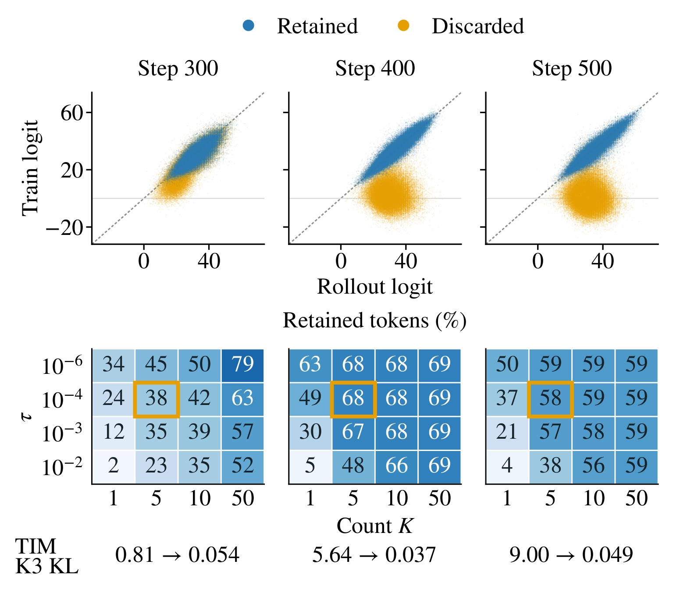
Figure 12 上部显示三个检查点被保留和丢弃词元在 logit 空间的位置，下部热图变化概率阈值和异常计数上限，每格表示剩余词元比例，金色框为默认配置。默认三个检查点约保留百分之三十八、六十八、五十八，散度由零点八一、五点六四、九点零下降到零点零五四、零点零三七、零点零四九。这既支持严重异常被移除，也说明过滤可能牺牲相当多数据，绝不是仅删一两个无关样本。若只报告过滤后更低散度，会隐藏有效数据成本。更严格配置可能删掉正确但罕见的推理，放宽计数在后期又可能增加失配而几乎不增加有效数据，因此必须配合最终准确率和墙钟成本看折中。热图给出特定数学任务中的经验选择，不证明相同阈值适用于所有语言和长度。当同题整组回答大多被删时，保留原始分母会降低该题更新强度，这可能是防崩溃机制，也可能成为困难问题学习变慢的原因。
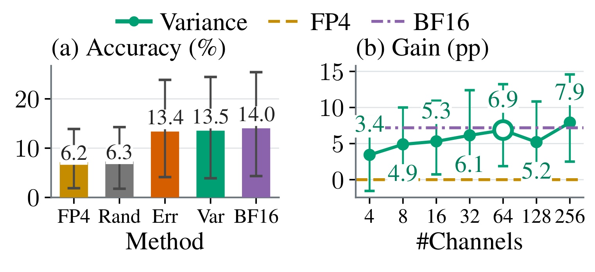
Figure 13 固定一个退化检查点，不重新训练，比较随机保护、误差选择、方差选择和高精度参照。随机准确率约百分之六点三，接近无补偿六点二；误差和方差选择分别恢复至十三点四和十三点五，接近高精度十四，说明保护的位置比随便增加精度更重要。右图增加通道数，六十四通道已恢复大部分能力，再增到二百五十六的平均收益有限，误差区间较宽且趋势不严格单调。这里置信区间来自三十次样本，不是三十次完整训练复现，不能据此宣布训练方差已经充分评估。冻结实验验证的是局部推理恢复，而非证明通道集合在训练中始终固定最优，因此实现仍逐步更新统计。方差策略比持续测量全量重构误差更便于维护，但上一轮统计的时滞、抽样误差和后续分布漂移都可能影响选择。迁移时应比较随机、方差和误差对照，确认目标模型也有类似集中结构。
正文性能与质量证据应分层理解：轨迹及通道诊断解释集中性，消融解释干预位置，最终部署表解释四位适配，匹配长度测试解释执行代价。一点七六至二点六倍是到达准确率阈值所需步数效率，三点七倍来自投影内核峰值，一点四倍来自某尺度完整单步时间，不能相加，也不能无条件相乘为新的总训练加速。论文没有推荐或广告线上业务实验，本笔记不把数学训练稳定性等同于点击率或收入改善。
4. 总结
4.1 机制判断与迁移价值
FourSight 把低精度故障拆到三个时间点：采样前保护易损通道，采样后检测严重数值异常，反向前阻断完整坏轨迹。它利用异常集中结构决定干预粒度，而没有把所有差异都当成可由平均散度修正的小噪声。只有补偿仍可能让残余坏回答污染梯度，只有过滤则补不回生成过程原本丢失的高质量信号，这个解释有跨引擎曲线支持。但是完整组合并不在每个最终数学指标都最优，不能将总体稳健性描述成每个任务无损改善。更实用的启发是保留诊断与组件开关，在目标数值路径上做选择。
对于生成式推荐、排序蒸馏或购物 Agent，最直接迁移是检查同一已生成标识符在训练和服务引擎中的概率是否一致。自回归标识符一旦进入异常前缀，后续合法约束可能掩盖内部数值问题，序列分布诊断有价值。但推荐通常有热门偏置、不完整反馈和稀疏奖励，低概率路径也可能代表长尾探索，整条删除可能进一步缩小覆盖。因此还应按物品频次、用户群和失败类别报告过滤率。这里提出的是待验证方向，论文自身没有证明这些场景会得到同样结果。
4.2 局限与跟进
第一，质量实验主要为数学任务与较小模型，一千二百亿仅验证性能，无法外推所有后训练场景。第二，阈值与连续计数依赖长度和采样温度，默认参数跨任务的可靠性仍未知。第三，方差替代二阶矩需要均值较小，通道统计有抽样噪声和更新时滞，不能视为普适最优保护。第四，融合内核、原生四位硬件、图捕获和权重打包都影响复现成本，本轮独立代码未核验。第五，最终精度比较保留补偿，部署需要同时核算显存和时延，不能只取最有利数字。第六，过滤可能偏向删除困难题和稀有正确思路，当前结果尚不足以排除覆盖损失。这些风险分别影响可迁移性、参数选择、理论适用、实现成本和训练覆盖。
后续应先固定检查点与输入，对齐两个引擎的词元概率和激活通道统计，用冻结对照确认数值问题，而不是把奖励错误或数据问题误判成量化故障。然后做过滤、补偿、组合三路同预算训练，同时记录有效词元数、分任务保留率、多个准确率阈值的墙钟时间和最终部署精度，检查结论是否只依赖某个阈值。第三步按真实服务形状重测完整投影和整个请求，把通道重选及权重同步费用纳入，避免只引用峰值。最后在更长轨迹、更多随机种子和非数学任务上追踪负向案例，特别观察正确但低概率探索是否被过度删去。未获得可运行实现并完成这些验证前，本文提供的是清晰的算法系统思路，而不是可保证复制的收益。
进一步跟踪应重视故障恢复后的长期稳定性。Figure 4 表明平均奖励反弹时仍有一部分回答几乎全是异常词元，如果仅将反弹视为训练恢复正常，就可能把不稳定检查点送入下一轮。相反，若把所有低概率词元都当错误，模型又会失去有效探索。合理的接受标准应同时要求任务能力、数值一致性、有效样本覆盖与执行成本，而不是只有一个更漂亮的平均散度。FourSight 的贡献在于给出这些观测如何连接到具体干预的范例，目标系统仍需为自己的数据分布设定验收条件。